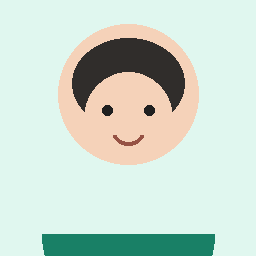

11 月 7 日 · 周五
今天的转化重点是 3 位用户
已按公司 SOP 驱动 5 个客户场景，服务运营智能体完成应答与质检，增长分析智能体已生成跟进建议。
SOP 场景推进
五个客户场景
增长分析智能体
今日跟进
实时协作
运行正常
两智能体工作链
01服务运营智能体识别问题 · 生成 3 备选 · 质检 · 发送
02增长分析智能体汇总行为 · 打标签 · 分层 · 生成话术
03运营老师选择回复 · 人工决策 · 沉淀经验

小林高活跃度用户 · 高意向
增长分析智能体
用户画像与跟进
融合运营对话和产品使用数据，自动形成最近行为概括、AI 标签、人工备注、分层建议和专属话术。
SOP 数字化执行
考研全程班 SOP
当前 SOP 已覆盖普通咨询、价格意向、试听转化、质检转人工和用户分层跟进。
已上线5 个流程阶段12 条知识 · 3 条质检规则
最近更新今天 09:26由林老师确认
AI 自动执行82%其余进入人工决策
运营发现不合理？
SOP 可持续修正
老师可以在运营过程中修改时间、触发条件或话术。保存时可选择仅本次生效，或沉淀为公司 SOP 默认规则供下次使用。
暂无人工微调记录
服务运营智能体 · 质检
话术库与风险质检
上传公司话术库后，禁止词和高风险动作会在 AI 回复备选中直接插出质检提醒，发送前由运营老师审核。
公司话术库
12 条已启用标准口径
课程价格以机构价目表为准，按科目与班型分档
退费政策以正式退费政策为准，签约前请仔细阅读
免费试听可预约免费试听，以本期试听安排为准
课程回放有回放，有效期以回放规则为准
禁止词与风险动作
质检规则
禁止词保过 / 包过 / 一定能录取命中后禁止自动发送
风险动作承诺可随时退款必须转人工审核
风险动作承诺锁定价格或优惠需核对当期活动
风险表述夸大师资或效果改为引用官方介绍
实时案例
等待人工退费问题拦截
用户：那报名以后可以随时退款吗？
识别到高风险动作：承诺可随时退款AI 原始候选包含“可以随时退款”，已拦截，不得自动发送。
合规候选
退费政策以您签署的课程服务协议为准，我先把正式退费规则发给您确认。由于这里需要准确解释政策，我会同步转给运营老师做人工确认。
Web 聊天演示轨
客户端模拟
使用与真实企业微信一致的消息协议，展示用户看到的对话结果，同时保留运营工作台的人工控制。
演示控制台
选择场景
当前客户
右侧显示客户端界面。点击工作台中的发送后，消息会同步出现在这里。
09:41
启航教育课程老师
发消息...
统一消息协议
同步中消息流
客户端消息映射为标准 JSON 消息事件
服务运营智能体检索 SOP 与话术库，产出候选
运营老师确认低风险可自动，高风险必须审核
客户端同步发送结果回写会话与用户画像